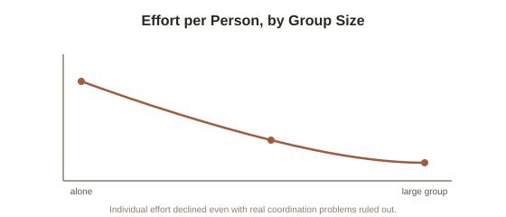

Chapter 2: Social Loafing — Ringelmann's Rope and Latané's Blindfold
Chapter 1 covered the bystander effect — people becoming less likely to act as group size grows. This chapter covers a related but distinct phenomenon: people exerting measurably less effort on a shared task as group size grows, even when they're already committed to participating and no dramatic decision to act or not act is involved at all. It's one of the oldest documented findings in social psychology, discovered by accident in an agricultural engineering study that had nothing to do with psychology.
Ringelmann's rope, pulled by accident into psychology's history
French agricultural engineer Max Ringelmann ran a series of studies in the 1880s measuring how much force groups of men could generate pulling a rope, compared to individuals pulling alone. His actual goal was practical — optimizing farm labor — but his data revealed something that became foundational decades later: the total force a group produced increased with group size, but not proportionally. One person pulling alone might generate 100% of their individual maximum force; a group of eight generated dramatically less than eight times that individual amount — closer to half, on a per-person basis. Ringelmann's own explanation split the loss into two components, though he lacked the tools to fully separate them at the time: some loss came from poor coordination (people's individual pulls not landing in perfect sync), and some came from people individually trying less hard once part of a group.
Latané isolates the motivational half a century later
Social psychologist Bibb Latané, the same researcher behind Chapter 1's bystander effect research, ran a cleaner version of Ringelmann's experiment in 1979 specifically designed to separate coordination loss from motivation loss — asking participants to shout or clap as loudly as possible, alone and in groups, but crucially, using blindfolds and headphones playing white noise so participants believed they were part of a larger group than they actually were. This let Latané measure effort independent of any real coordination problem, since a person shouting alone, believing others were shouting alongside them, has no actual coordination to lose. The effort drop persisted anyway — people made less individual noise when they merely believed more people were contributing, even though no real coordination issue existed. Latané named this social loafing (the tendency for individual effort on a shared task to decrease as the size of the group sharing that task increases, distinct from any actual coordination difficulty), isolating it as a genuine motivational phenomenon rather than simply a logistics problem.

Why this is a close cousin of diffusion of responsibility, not the same thing
Social loafing and Chapter 1's diffusion of responsibility share an underlying logic — a larger group diluting an individual's sense that their specific contribution matters — but they operate on different behaviors and different underlying mechanisms. Diffusion of responsibility concerns a discrete decision to act or not act, often in a high-stakes, one-time situation (help or don't help). Social loafing concerns the intensity of ongoing effort within an already-agreed-upon shared task, and research has identified a specific psychological driver behind it: evaluation potential (how identifiable and individually assessable a person's specific contribution is — high when effort can be clearly attributed to one person, low when it's blended anonymously into a group total). When individual contributions can be identified and evaluated separately — even within a group — social loafing drops substantially or disappears; it's specifically the anonymity of a blended, unattributable group effort that produces the effect, which is why Latané's masking of individual voices in a shared noise measurement was such an effective way to trigger it.
What actually counteracts it, according to the research
Given the evaluation-potential mechanism, the practical fix follows directly and has been repeatedly confirmed in organizational research: making individual contributions visible and separately measurable — assigning clearly owned sub-tasks rather than one large, blended group output, providing individual performance feedback within a team context, and keeping team sizes smaller so any one person's contribution remains more identifiable — reliably reduces social loafing. This is a genuinely useful, structural insight for anyone managing group work: the fix isn't appealing to people's sense of teamwork or effort in the abstract, it's specifically restoring the individual visibility that evaluation-potential research shows the loafing effect depends on.
Try this
Ideas for noticing or testing this in your own life.
- Think of a group project where effort felt unevenly distributed — check whether individual contributions were clearly visible and attributable, or blended into one shared, hard-to-evaluate output.
- Next time you're organizing group work, try assigning clearly owned, individually visible pieces rather than one shared task — a direct, low-cost application of the evaluation-potential fix.
Worth pulling on?
A few loose threads from this chapter — if any of these genuinely grab you, that's a good sign of where to go next.
- Groups don't just affect how much effort individuals put in — they also shape how individuals from different groups treat each other, sometimes escalating into open conflict from surprisingly small starting differences. → The subject of the next chapter: intergroup conflict and the Robbers Cave experiment.
- Evaluation potential's role in social loafing connects to a broader theme about how structural, visibility-based fixes tend to outperform appeals to willpower or good intentions. → Already in the library: Cognitive Biases & Judgment covers the same structural-fix-over-willpower theme in decision-making.